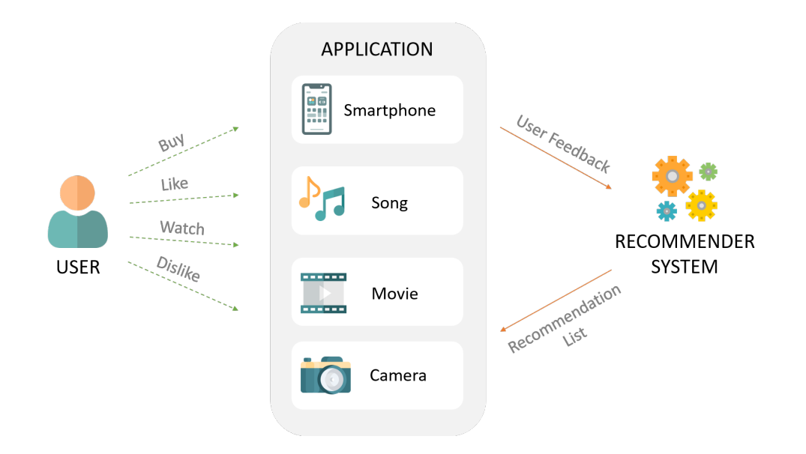

Applications of AI
AI is fast becoming a technology that is used in so many different sectors. Industries are adopting AI as it can be more powerful than humans and can perform tasks in a more efficient and much quicker time.
Here we will look at how AI is changing just a few industries and why.
Creative Industries
The creative industries includes many different forms of media, from film to music.
We see AI being utilised in films for many years. Albeit in a primitive way in the past. But now with technology like Deepfakes, any actor can appear on smartphone, and the big screen as well. Watch this video to find out more.
There are other aspects of the creative world that are utilising AI, such as image generation
AI image generation is a new phenomenon whereby users can type into a search bar and an image matching that criteria is generated.
 |
 |
Here you can see and example of an image generated from AI using the DALL-E 2 platform. You can try this for yourself at DALL-E 2
There are many other ways that AI is used in the creative industries. Why not try looking into some examples online.
E-Commerce
There are many examples of where AI is ued in E-Commerce. First we can see recommendations
for different products and services based on a users preferences. Here is an example of
how a recommendation system works.

Ferreira et al.(2020)
In this image you can see how based on a users' preferences they are given recommendations on what to buy, listen to, watch and many different areas of e-commerce.
Another way that e-commerce is affected by AI is through the use of Chatbots. Chatbots are becoming a very popular way of interfacing with users. They are seen on a lot of e-commerce websites because they can handle basic responses, and now, maybe some more complex ones. It's interesting to think about how far chatbots will go!
Watch this video on the raise of one of the most popular Chatbots on the market currently, Chat GPT
Healthcare
Healthcare is the final industry we will look at in this section. AI is now being used as part of the diagnosis process for different medical issues. AI has the ability to look through images and find potential cancers or be given different symptoms and feed this back to a doctor. We also see big data used in drug trials to see if a drug is successful or not.
CA A Cancer J Clin, 69: i-i. https://doi.org/10.3322/caac.21471 (2019)
Here you can see an image showing how AI is used to detect brain tumors. The model is given examples that is learns from to give a potential prognosis.
References
Ferreira, D.; Silva, S.; Abelha, A.; Machado, J. Recommendation System Using Autoencoders. Appl. Sci. 2020, 10, 5510. https://doi.org/10.3390/app10165510
CA A Cancer J Clin, 69: i-i. https://doi.org/10.3322/caac.21471 (2019)